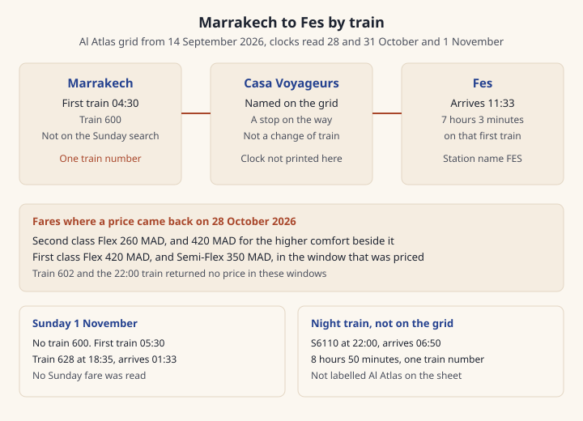

Marrakech to Fes by train
One Al Atlas train from Marrakech to Fes. You stay on it the whole way. Search your own date before you pay, and pay the fare that search shows.
You stay on one Al Atlas Source-checked 27 Oct 2026 Sources train the whole way. Casa Voyageurs Source-checked 27 Oct 2026 Sources is a stop on that train, so you do not change there.
On 28 October 2026 Source-checked 27 Oct 2026 Sources and 31 October 2026 Source-checked 27 Oct 2026 Sources the first train is 600 Source-checked 27 Oct 2026 Sources at 04:30 Source-checked 27 Oct 2026 Sources, in Fes at 11:33 Source-checked 27 Oct 2026 Sources, 7 hours 3 minutes Source-checked 27 Oct 2026 Sources later. From 06:35 Source-checked 27 Oct 2026 Sources the departures are one hour apart Source-checked 27 Oct 2026 Sources until 16:35 Source-checked 27 Oct 2026 Sources, and each of those takes 6 hours 58 minutes Source-checked 27 Oct 2026 Sources.
Pay the price your own date shows. Where a second-class price came back, Flex Source-checked 27 Oct 2026 Sources was 260 MAD Source-checked 27 Oct 2026 Sources and First Class Source-checked 27 Oct 2026 Sources beside it was 420 MAD Source-checked 27 Oct 2026 Sources. In the first-class window, Flex Source-checked 27 Oct 2026 Sources was 420 MAD Source-checked 27 Oct 2026 Sources and Semi-Flex Source-checked 27 Oct 2026 Sources was 350 MAD Source-checked 27 Oct 2026 Sources.
Train 600 Source-checked 27 Oct 2026 Sources does not run on Sundays and public holidays Source-checked 27 Oct 2026 Sources. On Sunday 1 November 2026 Source-checked 27 Oct 2026 Sources the first train was 602 Source-checked 27 Oct 2026 Sources at 05:30 Source-checked 27 Oct 2026 Sources.
The 22:00 Source-checked 27 Oct 2026 Sources listing, S6110 Source-checked 27 Oct 2026 Sources, is filed as a coach Source-checked 27 Oct 2026 Sources, not as an Al Atlas train. No price came back. It takes 8 hours 50 minutes Source-checked 27 Oct 2026 Sources and arrives at 06:50 Source-checked 27 Oct 2026 Sources.
Buy the ticket in your own name and keep it on your phone. Bring a passport Source-checked 27 Oct 2026 Sources. If you already have the ticket, allow 15 minutes Sources disagree Sources at the station. The schedule screen says 10 minutes Sources disagree Sources on the platform, and the doors close 2 minutes Source-checked 27 Oct 2026 Sources before the train leaves.
Last updated 27 Oct 2026.
Written by Omar Oujoud in Casablanca. Research drafting is AI-assisted; observations are recorded in person. How we check
Jump to what’s still being checked · sources
How we checked
The conditions, the aftersales page, the works page, and the timetable download page were read in English and in French. On each of those pages the two languages agree with each other. The English timetable link and the French one download the same file. The grid itself is in French. The English page titles that file Marrakech - Fez. The station record says FES Source-checked 27 Oct 2026 Sources in English and FES Source-checked 27 Oct 2026 Sources in French, and MARRAKECH Source-checked 27 Oct 2026 Sources in both. That is a spelling difference, not two stations.
The site's time setting was +00:00 Source-checked 27 Oct 2026 Sources. The clocks on the grid are the clocks the search returned. This page prints those clocks. It does not add an hour.
The grid is headed Al Atlas Source-checked 27 Oct 2026 Sources and is in force from 14 September 2026 Source-checked 27 Oct 2026 Sources. Each Al Atlas row is one train number through to Fes. The header names Casa Voyageurs Source-checked 27 Oct 2026 Sources among the stations on the way. This page does not print the time at that station. The columns are packed, and a blank cell is easy to misread. Every Al Atlas result below is one segment Source-checked 27 Oct 2026 Sources and one train number Source-checked 27 Oct 2026 Sources, on range 58 Source-checked 27 Oct 2026 Sources.
On 28 October 2026 Source-checked 27 Oct 2026 Sources and 31 October 2026 Source-checked 27 Oct 2026 Sources a morning search listed 15 results Source-checked 27 Oct 2026 Sources: 600 Source-checked 27 Oct 2026 Sources at 04:30 Source-checked 27 Oct 2026 Sources arriving 11:33 Source-checked 27 Oct 2026 Sources in 7 hours 3 minutes Source-checked 27 Oct 2026 Sources, 602 Source-checked 27 Oct 2026 Sources at 05:30 Source-checked 27 Oct 2026 Sources arriving 12:33 Source-checked 27 Oct 2026 Sources in 7 hours 3 minutes Source-checked 27 Oct 2026 Sources, then 604 Source-checked 27 Oct 2026 Sources at 06:35 Source-checked 27 Oct 2026 Sources, 606 Source-checked 27 Oct 2026 Sources at 07:35 Source-checked 27 Oct 2026 Sources, 608 Source-checked 27 Oct 2026 Sources at 08:35 Source-checked 27 Oct 2026 Sources, 610 Source-checked 27 Oct 2026 Sources at 09:35 Source-checked 27 Oct 2026 Sources, 612 Source-checked 27 Oct 2026 Sources at 10:35 Source-checked 27 Oct 2026 Sources, 614 Source-checked 27 Oct 2026 Sources at 11:35 Source-checked 27 Oct 2026 Sources, 616 Source-checked 27 Oct 2026 Sources at 12:35 Source-checked 27 Oct 2026 Sources, 618 Source-checked 27 Oct 2026 Sources at 13:35 Source-checked 27 Oct 2026 Sources, 620 Source-checked 27 Oct 2026 Sources at 14:35 Source-checked 27 Oct 2026 Sources, 622 Source-checked 27 Oct 2026 Sources at 15:35 Source-checked 27 Oct 2026 Sources and 624 Source-checked 27 Oct 2026 Sources at 16:35 Source-checked 27 Oct 2026 Sources, each of those taking 6 hours 58 minutes Source-checked 27 Oct 2026 Sources, and those departures are one hour apart Source-checked 27 Oct 2026 Sources, then 626 Source-checked 27 Oct 2026 Sources at 17:35 Source-checked 27 Oct 2026 Sources arriving 00:27 Source-checked 27 Oct 2026 Sources in 6 hours 52 minutes Source-checked 27 Oct 2026 Sources, and S6110 Source-checked 27 Oct 2026 Sources at 22:00 Source-checked 27 Oct 2026 Sources arriving 06:50 Source-checked 27 Oct 2026 Sources in 8 hours 50 minutes Source-checked 27 Oct 2026 Sources. Train 628 Source-checked 27 Oct 2026 Sources was not on those two dates. S6110 Source-checked 27 Oct 2026 Sources is not on the Al Atlas grid. It is range 1000 Source-checked 27 Oct 2026 Sources. The operator's range list marks that range as a coach Source-checked 27 Oct 2026 Sources, and the Arabic name of the range is the word for a bus. The English and French labels on the range are Au, so those two letters are not read here as the word coach. The search gives it the same station codes as the trains and does not describe a separate door.
On Sunday 1 November 2026 Source-checked 27 Oct 2026 Sources the search again listed 15 results Source-checked 27 Oct 2026 Sources, with no 600 Source-checked 27 Oct 2026 Sources. The first was 602 Source-checked 27 Oct 2026 Sources at 05:30 Source-checked 27 Oct 2026 Sources. Train 628 Source-checked 27 Oct 2026 Sources was there at 18:35 Source-checked 27 Oct 2026 Sources, arriving 01:33 Source-checked 27 Oct 2026 Sources, in 6 hours 58 minutes Source-checked 27 Oct 2026 Sources, and S6110 Source-checked 27 Oct 2026 Sources was there at 22:00 Source-checked 27 Oct 2026 Sources. The French footnote says train 600 Source-checked 27 Oct 2026 Sources does not run on Sundays and public holidays Source-checked 27 Oct 2026 Sources, and train 628 Source-checked 27 Oct 2026 Sources runs on Sundays Source-checked 27 Oct 2026 Sources. No public holiday was searched. The same file also prints Fes to Marrakech. This page is Marrakech to Fes.
Comfort code 2 is Second Class Source-checked 27 Oct 2026 Sources in English and Deuxième Classe Source-checked 27 Oct 2026 Sources in French. Comfort code 1 is First Class Source-checked 27 Oct 2026 Sources in English and Premiere Classe Source-checked 27 Oct 2026 Sources in French. The flex list calls code 1 Flexible Source-checked 27 Oct 2026 Sources in English and Flex Source-checked 27 Oct 2026 Sources in French, and code 2 Semi-Flexible Source-checked 27 Oct 2026 Sources in English and S-Flex Source-checked 27 Oct 2026 Sources in French. On 28 October 2026 Source-checked 27 Oct 2026 Sources the second-class search, opened at the start of that day and followed to the last page, returned 260 MAD Source-checked 27 Oct 2026 Sources on Flex Source-checked 27 Oct 2026 Sources, and 420 MAD Source-checked 27 Oct 2026 Sources for the higher comfort beside it, on trains 604 Source-checked 27 Oct 2026 Sources, 606 Source-checked 27 Oct 2026 Sources, 608 Source-checked 27 Oct 2026 Sources, 610 Source-checked 27 Oct 2026 Sources, 612 Source-checked 27 Oct 2026 Sources, 614 Source-checked 27 Oct 2026 Sources, 616 Source-checked 27 Oct 2026 Sources, 618 Source-checked 27 Oct 2026 Sources, 620 Source-checked 27 Oct 2026 Sources, 622 Source-checked 27 Oct 2026 Sources, 624 Source-checked 27 Oct 2026 Sources and 626 Source-checked 27 Oct 2026 Sources. That higher comfort is code 1, First Class Source-checked 27 Oct 2026 Sources. Train 600 Source-checked 27 Oct 2026 Sources returned no price. Train 602 Source-checked 27 Oct 2026 Sources returned no price. Train S6110 Source-checked 27 Oct 2026 Sources returned no price. On 31 October 2026 Source-checked 27 Oct 2026 Sources a search opened at 08:00 Source-checked 27 Oct 2026 Sources, and the next page of that search, returned the same 260 MAD Source-checked 27 Oct 2026 Sources and 420 MAD Source-checked 27 Oct 2026 Sources on trains 606 Source-checked 27 Oct 2026 Sources through 626 Source-checked 27 Oct 2026 Sources. That search did not include 600 Source-checked 27 Oct 2026 Sources, 602 Source-checked 27 Oct 2026 Sources, 604 Source-checked 27 Oct 2026 Sources or S6110 Source-checked 27 Oct 2026 Sources. A first-class search on 28 October 2026 Source-checked 27 Oct 2026 Sources, opened at 08:00 Source-checked 27 Oct 2026 Sources and followed to the next page, returned Flex Source-checked 27 Oct 2026 Sources at 420 MAD Source-checked 27 Oct 2026 Sources and Semi-Flex Source-checked 27 Oct 2026 Sources at 350 MAD Source-checked 27 Oct 2026 Sources on trains 606 Source-checked 27 Oct 2026 Sources, 608 Source-checked 27 Oct 2026 Sources, 610 Source-checked 27 Oct 2026 Sources, 612 Source-checked 27 Oct 2026 Sources, 614 Source-checked 27 Oct 2026 Sources, 618 Source-checked 27 Oct 2026 Sources, 620 Source-checked 27 Oct 2026 Sources, 622 Source-checked 27 Oct 2026 Sources, 624 Source-checked 27 Oct 2026 Sources and 626 Source-checked 27 Oct 2026 Sources. Train 604 Source-checked 27 Oct 2026 Sources was not in that search. Train 616 Source-checked 27 Oct 2026 Sources was not in those results. No sleeper price was in the pairs, and no Non-Flex price was in these results.
The price note, in English and in French, says a Flex ticket can be exchanged free of charge, 5 times, before departure Source-checked 27 Oct 2026 Sources, and a Semi-Flex ticket can be exchanged free of charge, once, before departure Source-checked 27 Oct 2026 Sources and refunded with 50% Source-checked 27 Oct 2026 Sources kept before departure. The aftersales page says the same 50% Source-checked 27 Oct 2026 Sources and one exchange Source-checked 27 Oct 2026 Sources for Semi-Flex, and 5 exchanges before departure Source-checked 27 Oct 2026 Sources for Flex. It also says you pay a fare difference or receive it, and that a seat has to be free. The two pages do not use the same Flex refund cutoff. The price note says nothing kept until the day before Sources disagree Sources and 20% kept on the travel day Sources disagree Sources. The aftersales page says a full refund at 24 hours or more Sources disagree Sources and 80% back within those 24 hours Sources disagree Sources. The evening before a 04:30 Source-checked 27 Oct 2026 Sources train is still the day before, and it is also inside 24 hours Sources disagree Sources.
The schedule screen, in English and in French, says be on the platform at least 10 minutes Sources disagree Sources before departure. The conditions, in English and in French, say be at the station at least 15 minutes Sources disagree Sources before departure if you already have the ticket. Platform access opens no earlier than 40 minutes Source-checked 27 Oct 2026 Sources before departure. The entrances close 2 minutes Source-checked 27 Oct 2026 Sources before the train leaves, and after that a ticket does not get you on, even from the platform. The conditions say an e-ticket on the website can be cancelled before 30 minutes Sources disagree Sources. The aftersales page says that cancellation is before departure Sources disagree Sources and does not repeat the 30 minutes Sources disagree Sources. If you miss the train, the departure station can issue another ticket for the same journey and the same comfort, up to 30 minutes Source-checked 27 Oct 2026 Sources after the original departure, when seats remain.
A child under 4 Source-checked 27 Oct 2026 Sources rides free on a lap. From 4 to 15 the child fare applies Source-checked 27 Oct 2026 Sources. Over 15 the full fare applies Source-checked 27 Oct 2026 Sources. The amount of the child fare is not printed. An e-ticket can be printed or kept on a phone, and the PDF barcode stays usable offline Source-checked 27 Oct 2026 Sources. At a check the named passenger shows a passport, a national identity card, a residence permit, or a driving licence Source-checked 27 Oct 2026 Sources. A photo of a paper ticket is not accepted Source-checked 27 Oct 2026 Sources. Hand luggage stays within 1.2 m × 0.6 m × 0.4 m Source-checked 27 Oct 2026 Sources. The conditions name cash Source-checked 27 Oct 2026 Sources as one way to pay at a station. An e-ticket on the site is paid by card Source-checked 27 Oct 2026 Sources. Ticket questions on these pages go to 2255 Source-checked 27 Oct 2026 Sources, which the pages describe as a local-rate call. A scooter is forbidden on an Al Atlas train, and the conditions name a fine of 300 MAD Source-checked 27 Oct 2026 Sources.
The works page, in both languages, limits Marrakech–Tangier Al Atlas trains at Kenitra Source-checked 27 Oct 2026 Sources. It names Fes–Marrakech among the routes with small clock changes Source-checked 27 Oct 2026 Sources. It does not print a new clock for this journey. The grid and the three searches still match. Nothing on this page was seen on a visit.

At a glance
One train, a long daytime ride, and a late coach that the Al Atlas sheet does not name. Pay the price your own date shows. The two refund pages do not share a cutoff.
| Detail | Al Atlas grid | Search on 28 and 31 October | Sunday 1 November |
|---|---|---|---|
| In force | from 14 September 2026 Source-checked 27 Oct 2026 Sources, one train number Source-checked 27 Oct 2026 Sources | the same clocks as the grid, plus S6110 Source-checked 27 Oct 2026 Sources | no train 600 Source-checked 27 Oct 2026 Sources, and train 628 Source-checked 27 Oct 2026 Sources is added |
| First train | 600 Source-checked 27 Oct 2026 Sources at 04:30 Source-checked 27 Oct 2026 Sources, arrives 11:33 Source-checked 27 Oct 2026 Sources, 7 hours 3 minutes Source-checked 27 Oct 2026 Sources | listed on both dates, and no price came back for it | absent |
| Daytime trains | one hour apart Source-checked 27 Oct 2026 Sources from 06:35 Source-checked 27 Oct 2026 Sources to 16:35 Source-checked 27 Oct 2026 Sources, 6 hours 58 minutes Source-checked 27 Oct 2026 Sources | the same clocks | the same clocks, from 602 Source-checked 27 Oct 2026 Sources at 05:30 Source-checked 27 Oct 2026 Sources |
| Last on the grid most days | 626 Source-checked 27 Oct 2026 Sources at 17:35 Source-checked 27 Oct 2026 Sources, arrives 00:27 Source-checked 27 Oct 2026 Sources, 6 hours 52 minutes Source-checked 27 Oct 2026 Sources | listed | listed, and 628 Source-checked 27 Oct 2026 Sources at 18:35 Source-checked 27 Oct 2026 Sources arrives 01:33 Source-checked 27 Oct 2026 Sources |
| Late listing | not on this sheet | S6110 Source-checked 27 Oct 2026 Sources, a coach Source-checked 27 Oct 2026 Sources, at 22:00 Source-checked 27 Oct 2026 Sources, arrives 06:50 Source-checked 27 Oct 2026 Sources, 8 hours 50 minutes Source-checked 27 Oct 2026 Sources | the same 22:00 Source-checked 27 Oct 2026 Sources |
| Second class, where a price came back | the sheet has no fares | 260 MAD Source-checked 27 Oct 2026 Sources Flex Source-checked 27 Oct 2026 Sources, and 420 MAD Source-checked 27 Oct 2026 Sources First Class Source-checked 27 Oct 2026 Sources beside it | Not yet confirmed |
| First class, in the window that was priced | the sheet has no fares | 420 MAD Source-checked 27 Oct 2026 Sources Flex Source-checked 27 Oct 2026 Sources and 350 MAD Source-checked 27 Oct 2026 Sources Semi-Flex Source-checked 27 Oct 2026 Sources on 28 October 2026 Source-checked 27 Oct 2026 Sources | Not yet confirmed |
| Be there | the sheet has no arrival rule | 15 minutes Sources disagree Sources in the conditions, 10 minutes Sources disagree Sources on the schedule screen, platform closes 2 minutes Source-checked 27 Oct 2026 Sources before | the same pages |
Step by step
Our advice: search the date you will travel, and pay the price that search shows. The grid is the shape of the day. It is not a promise that your morning still has the first train, or a price for it.
- Open the schedule on oncf-voyages.ma and the prices on the availability search. The grid is the file linked from the timetable page, in French and from the English download, which is the same file. The English heading on that page says Marrakech - Fez. The station list says MARRAKECH Source-checked 27 Oct 2026 Sources and FES Source-checked 27 Oct 2026 Sources. Works that can move a clock by a few minutes are on the works page.
- On 28 October 2026 Source-checked 27 Oct 2026 Sources and 31 October 2026 Source-checked 27 Oct 2026 Sources the morning search had 600 Source-checked 27 Oct 2026 Sources at 04:30 Source-checked 27 Oct 2026 Sources, arriving 11:33 Source-checked 27 Oct 2026 Sources, and 602 Source-checked 27 Oct 2026 Sources at 05:30 Source-checked 27 Oct 2026 Sources, arriving 12:33 Source-checked 27 Oct 2026 Sources. From 06:35 Source-checked 27 Oct 2026 Sources to 16:35 Source-checked 27 Oct 2026 Sources the trains leave one hour apart Source-checked 27 Oct 2026 Sources and take 6 hours 58 minutes Source-checked 27 Oct 2026 Sources. 626 Source-checked 27 Oct 2026 Sources leaves at 17:35 Source-checked 27 Oct 2026 Sources and arrives at 00:27 Source-checked 27 Oct 2026 Sources.
- Where a second-class price came back on 28 October 2026 Source-checked 27 Oct 2026 Sources, Flex Source-checked 27 Oct 2026 Sources was 260 MAD Source-checked 27 Oct 2026 Sources and First Class Source-checked 27 Oct 2026 Sources beside it was 420 MAD Source-checked 27 Oct 2026 Sources. That was trains 604 Source-checked 27 Oct 2026 Sources to 626 Source-checked 27 Oct 2026 Sources. Trains 600 Source-checked 27 Oct 2026 Sources and 602 Source-checked 27 Oct 2026 Sources had no price. The first-class window the same day showed 420 MAD Source-checked 27 Oct 2026 Sources on Flex Source-checked 27 Oct 2026 Sources and 350 MAD Source-checked 27 Oct 2026 Sources on Semi-Flex Source-checked 27 Oct 2026 Sources. Buy the ticket in the name of the person who will ride. That person shows a passport, a national identity card, a residence permit, or a driving licence Source-checked 27 Oct 2026 Sources. The PDF barcode stays usable offline Source-checked 27 Oct 2026 Sources. A photo of a paper ticket is not accepted Source-checked 27 Oct 2026 Sources.
- A child under 4 Source-checked 27 Oct 2026 Sources rides free on a lap. From 4 to 15 the child fare applies Source-checked 27 Oct 2026 Sources. Over 15 the full fare applies Source-checked 27 Oct 2026 Sources. The child fare in dirhams is Not yet confirmed. Hand luggage stays within 1.2 m × 0.6 m × 0.4 m Source-checked 27 Oct 2026 Sources. A scooter on an Al Atlas train draws the fine of 300 MAD Source-checked 27 Oct 2026 Sources named in the conditions.
- If you already have the ticket, allow 15 minutes Sources disagree Sources at the station. The schedule screen says 10 minutes Sources disagree Sources on the platform. The two pages do not match, so use the longer of the two if the train matters. The entrances close 2 minutes Source-checked 27 Oct 2026 Sources before the train leaves. Platform access opens no earlier than 40 minutes Source-checked 27 Oct 2026 Sources before departure. If you miss it, the departure station can issue another ticket for the same journey and the same comfort up to 30 minutes Source-checked 27 Oct 2026 Sources after the original departure, when seats remain.
- The conditions name cash Source-checked 27 Oct 2026 Sources at a station, and by card Source-checked 27 Oct 2026 Sources for an e-ticket on the site. Ticket questions on these pages go to 2255 Source-checked 27 Oct 2026 Sources, a local-rate call. There is no link here for that call.
- You do not change trains. Casa Voyageurs Source-checked 27 Oct 2026 Sources is a station the grid names on the way. If your ticket starts there, use Catching your train at Casa Voyageurs. The Casablanca ride in the other direction is Casablanca to Marrakech by train. To Essaouira, the road is Marrakech to Essaouira by coach. For the station in Marrakech, a petit taxi is Petit taxis in Marrakech, and an app, when a car is offered, is Uber and ride apps in Marrakech. From the airport, start with Marrakech airport to the medina. What the notes look like is in Cash and ATMs at Marrakech airport. A phone line, if the ticket lives on your phone, is SIM card at Marrakech airport. The fare log has no train row yet. The city page is Your first Marrakech trip. The walk from the Fes station to the medina is not on this page.
Phrases, if you need them:
- Un billet Marrakech–Fès, s'il vous plaît. One ticket, Marrakech to Fes, please.
- Quelle heure à Fès, s'il vous plaît? What time in Fes, please?
- تذكرة إلى فاس، من فضلك. A ticket to Fes, please.
The edge case
Sunday. Train 600 Source-checked 27 Oct 2026 Sources does not run on Sundays and public holidays Source-checked 27 Oct 2026 Sources. On Sunday 1 November 2026 Source-checked 27 Oct 2026 Sources the first train was 602 Source-checked 27 Oct 2026 Sources at 05:30 Source-checked 27 Oct 2026 Sources. Train 628 Source-checked 27 Oct 2026 Sources runs on Sundays Source-checked 27 Oct 2026 Sources, leaving at 18:35 Source-checked 27 Oct 2026 Sources and arriving at 01:33 Source-checked 27 Oct 2026 Sources. No public holiday was searched, and no Sunday price was read. Search that date.
The late listing. S6110 Source-checked 27 Oct 2026 Sources leaves at 22:00 Source-checked 27 Oct 2026 Sources and arrives at 06:50 Source-checked 27 Oct 2026 Sources, 8 hours 50 minutes Source-checked 27 Oct 2026 Sources later. It was on the search for all three dates. The operator files it as a coach Source-checked 27 Oct 2026 Sources, and it is not on the Al Atlas sheet. The windows read here returned no price. Do not assume the 260 MAD Source-checked 27 Oct 2026 Sources figure covers it, and do not assume it uses a platform.
A missed train, and a closed platform. The entrances close 2 minutes Source-checked 27 Oct 2026 Sources before departure. After that, being on the platform with a ticket does not get you on. If you miss the train, the departure station can issue another ticket for the same journey and the same comfort, up to 30 minutes Source-checked 27 Oct 2026 Sources after the original departure, when seats remain. Cancelling an e-ticket on the website is before 30 minutes Sources disagree Sources in the conditions and before departure Sources disagree Sources on the aftersales page.
A change of plan. Semi-Flex, on both the price note and the aftersales page, keeps 50% Source-checked 27 Oct 2026 Sources if you refund before departure, and allows one exchange Source-checked 27 Oct 2026 Sources. Flex exchanges are 5 exchanges before departure Source-checked 27 Oct 2026 Sources on the aftersales page, and the price note calls them free of charge, 5 times, before departure Source-checked 27 Oct 2026 Sources. You pay a fare difference, or you receive it, and a seat has to be free. The refund cutoff does not match: nothing kept until the day before Sources disagree Sources and 20% kept on the travel day Sources disagree Sources on the price note, against a full refund at 24 hours or more Sources disagree Sources and 80% back within those 24 hours Sources disagree Sources on the aftersales page. These searches did not return a Non-Flex price. The aftersales page says that fare is not refundable and not exchangeable. Read the line on the ticket in front of you.
A child, a bag, a scooter. Under 4 Source-checked 27 Oct 2026 Sources is free on a lap. From 4 to 15 the child fare applies Source-checked 27 Oct 2026 Sources, and the price is not printed. Hand luggage stays within 1.2 m × 0.6 m × 0.4 m Source-checked 27 Oct 2026 Sources. There is no kilogram figure in that sentence. A scooter is forbidden on an Al Atlas train, with a fine of 300 MAD Source-checked 27 Oct 2026 Sources named in the conditions.
Ramadan is not mentioned on these pages. A public holiday that drops train 600 Source-checked 27 Oct 2026 Sources is not listed by date. The works page names Fes–Marrakech among the routes with small clock changes Source-checked 27 Oct 2026 Sources and does not print a replacement clock. Search the day you will ride.
What to watch for
Our advice: the price on your date is the price to pay. A figure from another train, or from the day before, is a different search.
- One train. The Al Atlas search returns one train number Source-checked 27 Oct 2026 Sources from Marrakech to Fes. Stay on it if it stops at Casa Voyageurs Source-checked 27 Oct 2026 Sources.
- Sunday morning. Train 600 Source-checked 27 Oct 2026 Sources at 04:30 Source-checked 27 Oct 2026 Sources was not on the Sunday 1 November 2026 Source-checked 27 Oct 2026 Sources search. The first train that day was 05:30 Source-checked 27 Oct 2026 Sources.
- The early trains have a clock and, here, no fare. 600 Source-checked 27 Oct 2026 Sources at 04:30 Source-checked 27 Oct 2026 Sources and 602 Source-checked 27 Oct 2026 Sources at 05:30 Source-checked 27 Oct 2026 Sources were on the schedule. The price pages read here returned nothing for either.
- The late listing. S6110 Source-checked 27 Oct 2026 Sources is a coach Source-checked 27 Oct 2026 Sources on these dates, and it is not on the Al Atlas sheet. No price came back for it.
- Two clocks for showing up. 15 minutes Sources disagree Sources at the station in the conditions. 10 minutes Sources disagree Sources on the platform on the schedule screen. The doors to the platform close 2 minutes Source-checked 27 Oct 2026 Sources before the train leaves.
- The refund line. Read it before you choose Flex Source-checked 27 Oct 2026 Sources or Semi-Flex Source-checked 27 Oct 2026 Sources. The price note and the aftersales page do not share a Flex cutoff.
- The name on the ticket. The person who rides shows a passport, a national identity card, a residence permit, or a driving licence Source-checked 27 Oct 2026 Sources. Keep the barcode offline on the phone.
- The fare log. The fare log has no row for this train. A price named at the station is not recorded here.
Still being checked
Not yet confirmed, so not stated as fact on this page:
- The Flex refund cutoff. The price note says nothing kept until the day before Sources disagree Sources and 20% kept on the travel day Sources disagree Sources. The aftersales page says a full refund at 24 hours or more Sources disagree Sources and 80% back within those 24 hours Sources disagree Sources.
- How early to be there. The schedule screen says 10 minutes Sources disagree Sources on the platform. The conditions say 15 minutes Sources disagree Sources at the station if you already have the ticket.
- Cancelling an e-ticket on the website. The conditions say before 30 minutes Sources disagree Sources. The aftersales page says before departure Sources disagree Sources and does not repeat the 30 minutes Sources disagree Sources.
- The price of trains 600 Source-checked 27 Oct 2026 Sources and 602 Source-checked 27 Oct 2026 Sources. Both were on the schedule. The price pages read here returned nothing for either.
- The price of S6110 Source-checked 27 Oct 2026 Sources, and where that coach Source-checked 27 Oct 2026 Sources boards. It is on the search at 22:00 Source-checked 27 Oct 2026 Sources, it is not on the Al Atlas sheet, and the search uses the same station codes as the trains without describing a door.
- Sunday prices, and the price of train 628 Source-checked 27 Oct 2026 Sources. The Sunday search was for clocks. No Sunday fare was read.
- The child fare in dirhams. The conditions say from 4 to 15 Source-checked 27 Oct 2026 Sources and do not print the amount.
- Which public holidays drop train 600 Source-checked 27 Oct 2026 Sources. The footnote names public holidays. It does not list the dates.
- Whether a Non-Flex price, or a sleeper price, appears on another search. These windows returned neither.
- Whether every station named on the grid, including Casa Voyageurs Source-checked 27 Oct 2026 Sources, is a stop for every train. The intermediate clocks are not printed here.
- The walk from the Fes station to the medina. It is not on these pages.
- Whether the Marrakech window takes the cash Source-checked 27 Oct 2026 Sources the conditions name, on the day you travel. That was not seen at the window.
Next on your route.
Each guide covers one step of the journey.
Sources for this page
Every fact on this page shows when it was checked and links here to its source. What the badges mean.
- Marrakech to Fes train clocks: ONCF, ONCF, page 2, ONCF, page 3, ONCF, page 4, ONCF, page 5, ONCF, page 6, ONCF, page 7. Reviewed 27 Oct 2026.
- Marrakech to Fes train fares on the dates read: ONCF, ONCF, page 2, ONCF, page 3. Reviewed 27 Oct 2026.
- ONCF ticket rules that the English and French pages state the same way: ONCF, ONCF, page 2, ONCF, page 3. Reviewed 27 Oct 2026.
- How early to be at the station for an ONCF train: ONCF, ONCF, page 2. Reviewed 27 Oct 2026.
- Flex refund cutoff on the price note and the aftersales page: ONCF, ONCF, page 2. Reviewed 27 Oct 2026.
- When an e-ticket can be cancelled on the ONCF website: ONCF, ONCF, page 2. Reviewed 27 Oct 2026.
- Works page and the Marrakech to Fes clocks: ONCF. Reviewed 27 Oct 2026.